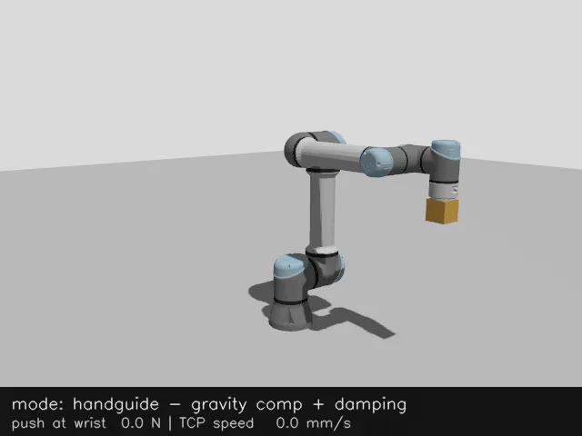
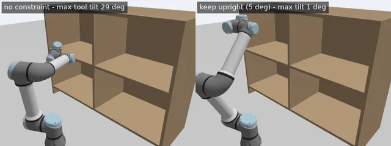
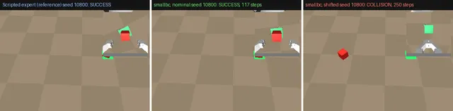

Giridhar J Shenoy
Robotics engineer — manipulator control and ROS 2 systems. Controllers shipped on 30 production arms; humanoid planning and retargeting; moving into learning-based manipulation.
About
I build the control and planning layers of robot manipulators: real-time controllers, motion planning on perception data, and the ROS 2 systems that hold them together, and I am moving into learning-based manipulation. I have shipped controllers on production industrial arms, led planning for a humanoid, and founded and wound down a robotics company. I'm based in Bengaluru and open to engineering seats at robotics companies and research-engineer seats in labs alike. giridharjshenoy@gmail.com.
Public code
-

ur5e-teaching-controllers
ros2_control effort controllers for a simulated UR5e: joint-space tracking (PID, PID with RNEA feedforward, computed torque) on Pinocchio or KDL dynamics, gravity-compensated hand guiding with a runtime payload model, and damped-least-squares TCP jogging.
-

pointcloud-constrained-planning
Keep-the-cup-upright constrained planning for a simulated UR5e through a shelf that MoveIt 2 only knows from an octomap built live from a simulated RGB-D camera, benchmarked against a pipeline written directly on OMPL, Pinocchio and coal.
-

sim-demo-to-policy
A MuJoCo pick-and-place task on a Franka Panda: scripted demonstrations recorded as LeRobot datasets, ACT and a small from-scratch spatial-softmax BC policy trained on a laptop CPU, and an evaluation harness with held-out seeds, a failure taxonomy and confidence intervals.